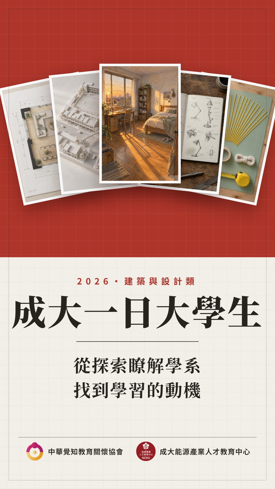
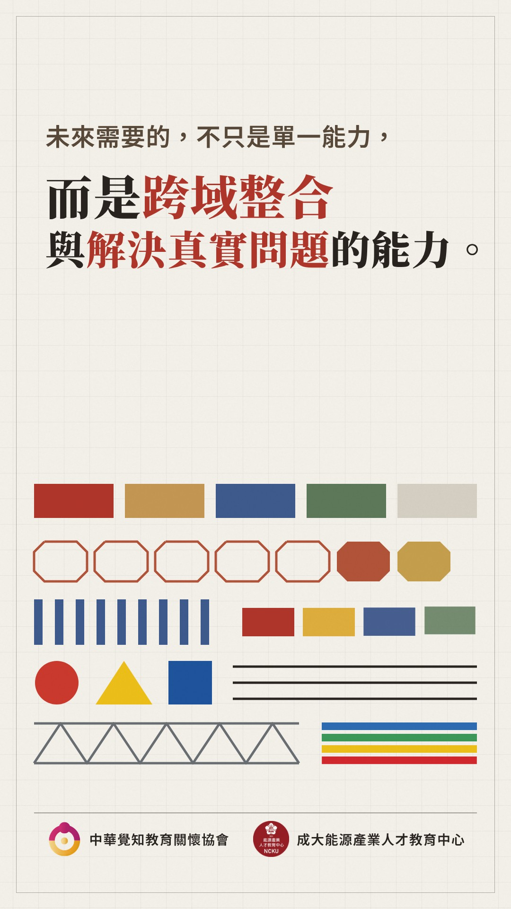
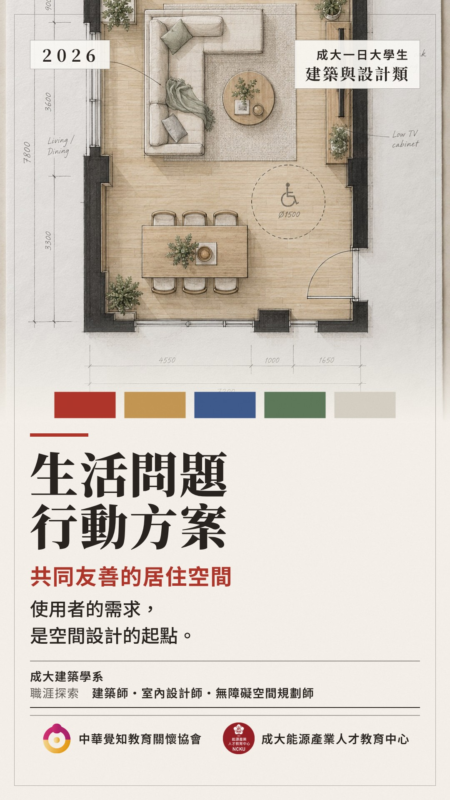
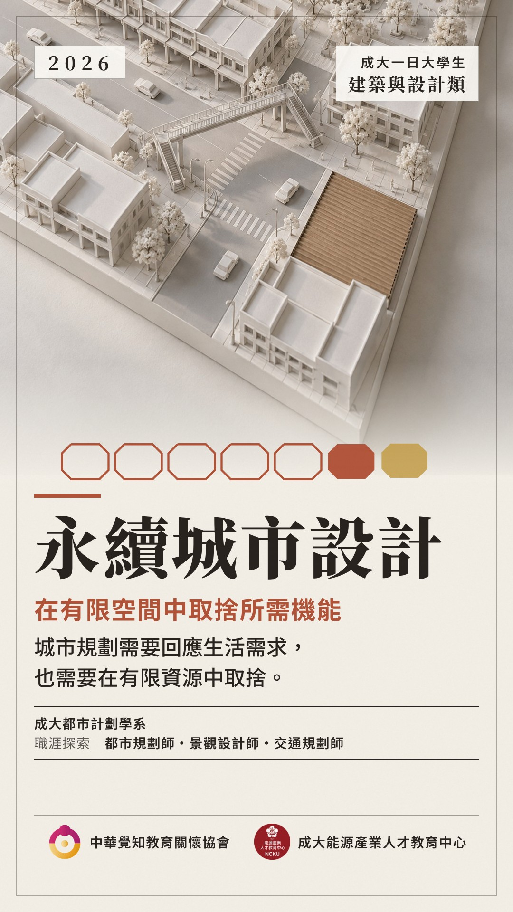
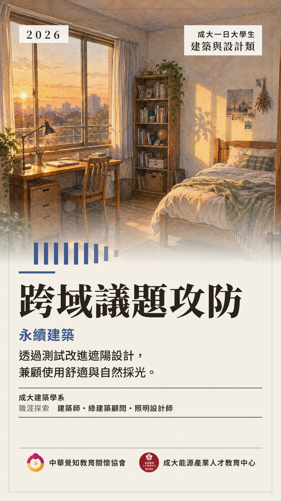
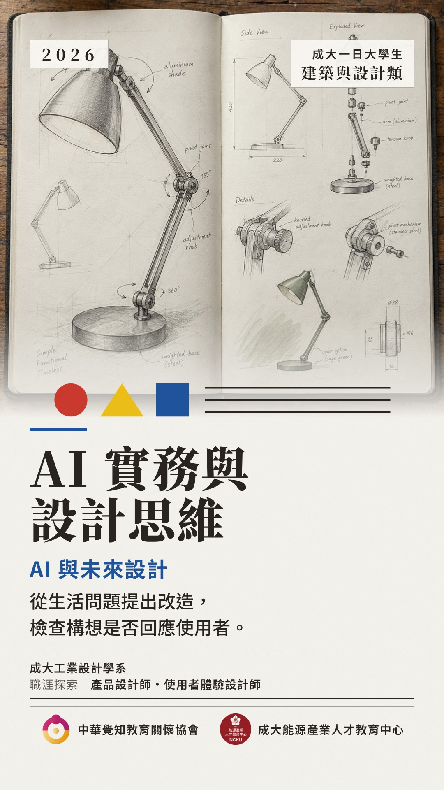
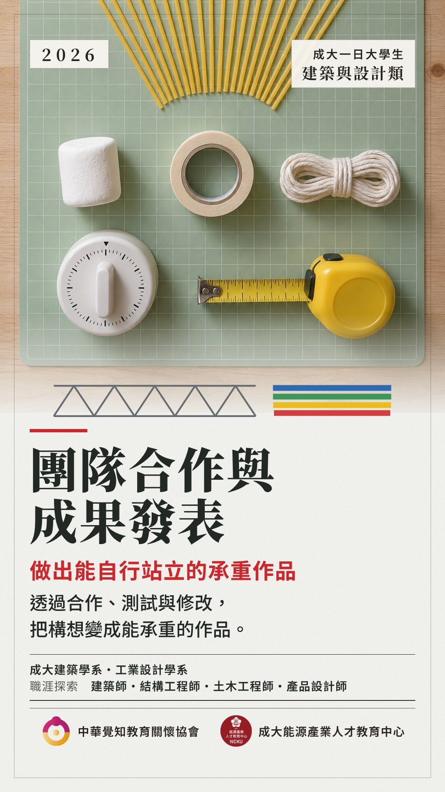
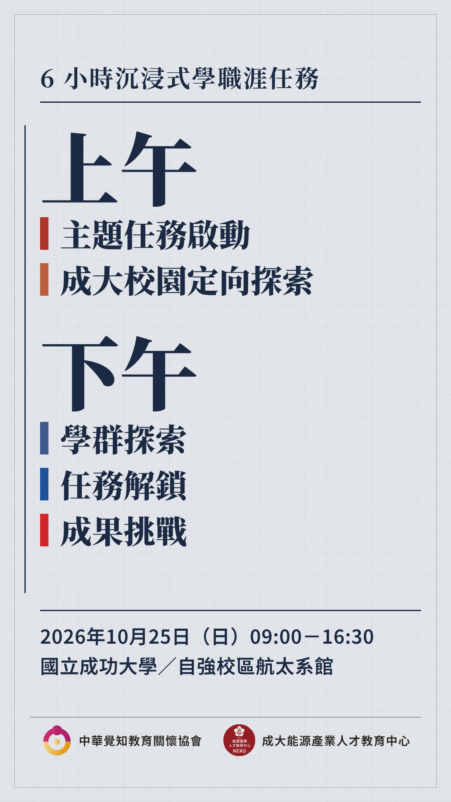
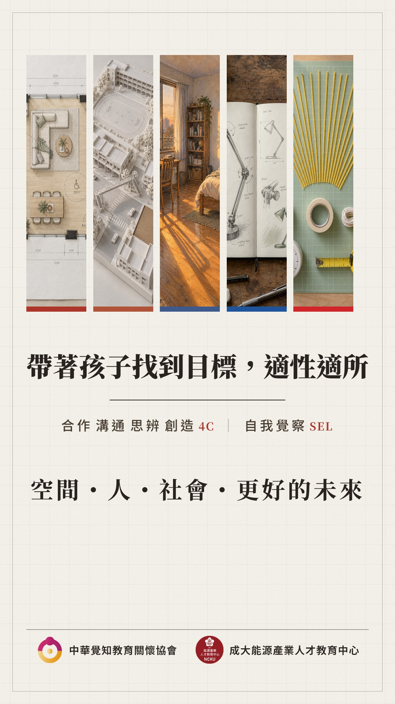
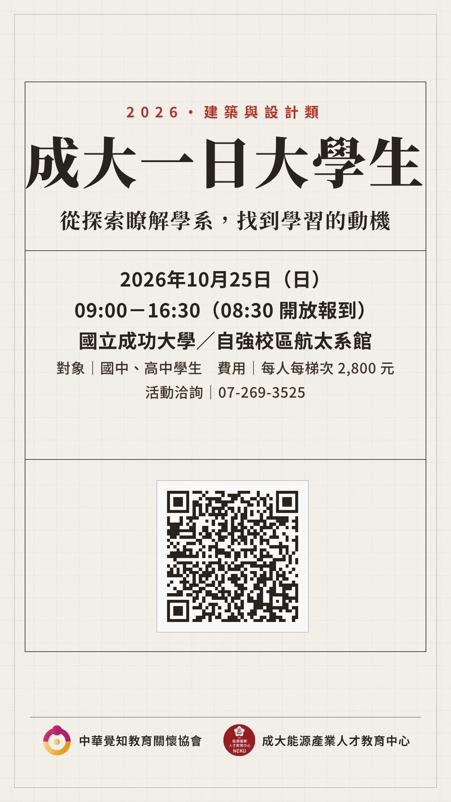

第一格就有「成大一日大學生」。五張主圖像卡片落下，每張先畫線稿再上色。主宣傳句停 3.5 秒。

T 尺由上往下掃過換場。海報句停 4.5 秒；五組名作元素依序畫出，代表五個領域放在一起＝跨域。

描圖紙推上→線稿 2.4 秒→上色 1.8 秒。主題句＋理念句停 3.5 秒以上。柯比意色票。

藍圖格一格一格長出來換場。巴塞隆納切角街廓。

遮陽百葉一片片打開換場。馬賽公寓遮陽板。

鉛筆先描出圖框，再鋪滿紙。包浩斯紅圓、黃三角、藍方。

樓板由下往上一層層疊起換場。龐畢度桁架與管線色。

一條時間軸線畫下來帶出新的紙。上午、下午的項目依序進場，照 10/21 一天流程圖的文字和配色。

剖面斜線換場。五個主題的畫面並排；理念句＋4C／SEL＋「空間・人・社會・更好的未來」。

描圖紙從上方落下，鉛筆框線描出。照正式海報的文字和 QR；停 5 秒以上，可以截圖。